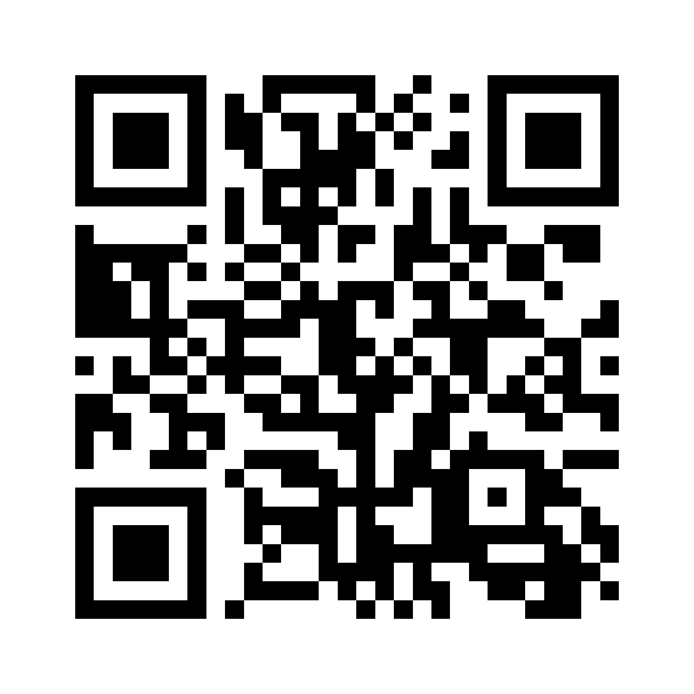

ΣIRIUS
Étiquettes cuisine · Réserve
Scannez ce QR code avec l’appareil photo du téléphone.

https://sirius-assistant.fr/haccp- Ouvrez le lien et connectez-vous au compte autorisé.
- Choisissez Réception ou Ouverture produit.
- Renseignez l’opérateur et touchez Scanner étiquette.
- Photographiez, puis vérifiez le produit, le lot et les dates.
Internet requis · Aucun mot de passe dans le QR.
Ouverture : durée fabricant/PMS à confirmer, aucun J+3 automatique.
Une photo ne certifie ni la température ni la conformité sanitaire.